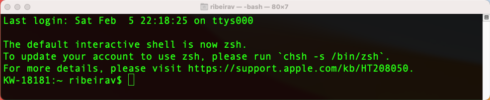

![]()
1 Introduction
Git is a distributed version control system software for tracking changes in any set of files, usually used for coordinating work among programmers collaboratively writing source code during software development. On the other hand, GitHub is a cloud platform for software development and version control using Git (adapted from here and here).
1.1 Preliminaries
Firstly, I will assume macOS as the Operating System (OS) for this tutorial. Some instructions (in particular, Section 3.4.1) will be OS dependent. For a broader discussion on how to set SSH keys on other platforms, you may refer to this tutorial.
Also, specially for the first part of this tutorial, we will do the commands manually. To do this, we will use the terminal from macOS (the same applies to the terminal from Linux distributions; and for Windows users, refer to this link).
To access the terminal, on the macOS, press Command + space bar, and type terminal. The below image shows what the terminal looks like.

Many things can be done using the terminal, but for this tutorial we will focus on a specific set of instructions. In particular, other that the Git specific commands, we will use
cd: change directorymkdir: create a directoryls: list files (ls -a: also list hidden files)touch: create a fileopen: open a filenano: edit a file using thenanotext editor
1.2 Installation
To download and install Git, refer to https://git-scm.com/downloads (or https://github.com/git-guides/install-git). And to verify if Git was successfully installed, type git --version on the terminal.
To create a GitHub account, go to https://github.com/, click on Sign Up, and follow the instructions.
2 General Procedure
As an overview, first, we must navigate to the project folder on the terminal using the cd command, so that we can create a local repository using the git init command. Then, the following steps are represented in the image below (this diagram was inspired by this video).
This means that we can use the git add, git commit, git push, and git clone commands to move files along compartments. Also, notice that the changes are tracked and saved in the Commit history.
3 First steps
After installing Git, it is important to set an username and your email address (the same as from your GitHub account). To do this, on the terminal
git config --global user.name 'username'
git config --global user.email 'email@email.com'Replacing 'username' and 'email@email.com' by the appropriate values.
And to check the values, one can use the following commands
git config user.name
git config user.emailAlthough the next step is not mandatory, it is a good practice to change the name of the main branch from master to main, (for consistency with GitHub guidelines). We can do this using the following command
git config --global init.defaultBranch main3.1 Creating your first repository
Let’s create our first repository. To do this, on the terminal (if on Windows, the cmd), navigate to your Desktop directory, and create a new folder named GitTutorial. Depending on your directories structure, you can do this in the following way
cd ~/Desktop/
mkdir GitTutorial
cd GitTutorialFinally, to create/initialize a repository, use the git init command. That is,
git initTo make sure that a repository was created, you can look for the .git folder by typing the ls -a command. On the other hand, if you want to delete the .git folder (and therefore, the repository settings), you can type rm -rf .git.
3.2 Moving files to the Staging area
Now, let’s create some non-significant files on /GitTutorial/, so that we can see how to work with them. You can do this by typing touch file1.R file2.R (or you can create them manually). For this situation, we would have the following files structure
Desktop/
└── GitTutorial/
├── .git/
├── file1.R
└── file2.RTo see these files’ status, you can use the git status command.
Also, you can send a file (e.g., file1.R) to the Staging area with the git add file1.R command (to send all files at once, use git add .).
After doing this, run git status again.
You can remove a file (e.g., file1.R) from the Staging area with the git rm --cached file1.R command. After doing this, run the git status command one more time.
Before going to the next subsection send all files to the Staging area with
git add .3.3 Creating commits
A commit can be seen as a safe point. Meaning that you can always refer back to them, if needed. To create a commit (based on the Staging area), use the following command
git commit -m 'meaningful but short message'For example, you can start your list of commits with the following command
git commit -m 'initial commit'You can check the status of your repository using the git status command. Also, to see the log of commits, use the git log command.
Now, modify file1.R and do all steps again. In particular, use the following commands
nano file1.R # to modify the file1.R
git status
git add .
git status
git commit -m 'modify file1'
git status
git logTo go back in time and revert your project to one of your safe points (i.e., to one of your previous commits), you can use the following commands
git log # and copy the commit key; e.g., 42037c4bf5c1fe189a62632b393f6971979d8bf4
git revert --no-commit 42037c4bf5c1fe189a62632b393f6971979d8bf4..HEAD
git commit -m 'back to old version X'Notice that there are different ways to do this (getting back to a point in the past), but never delete your history of commits. After all, that is the main reason why you should use Git: for tracking your changes.
If you want to visit older commits, use the git checkout (commit key) command. To come back, use the git switch - command.
3.4 Pushing files to GitHub
Assuming you already have a GitHub account (if not, you can click here to create one), we can create a new repository on Github.

Now, since we want to “push an existing repository from the command line” (for example, the repository we have just created in /GitTutorial/), all we need to do is
git remote add origin git@github.com:user/repository.git
git branch -M main
git push -u origin mainHowever, there are a few important comments to be made.
- In the first line, notice that
userandrepository.githave to be replaced by the appropriate values. - Recently, the default name of the main branch was modified from
mastertomain, as in the second line. You can use thegit branchcommand to verify the current name. Also, the second line may not be necessary if you already re-define your standard main branch name. - Using the
git pushcommand right away will likely lead to an error due to authentication issues. We will fix it now.
3.4.1 SSH settings
Since it is no longer possible to connect to GitHub using just your username and password, we have to set a SSH (Secure Shell, which is a cryptographic network protocol) key.
To do this, based on this guide, do the following.
- On the terminal, enter the following command (replacing
email@email.comby your email address).
ssh-keygen -t ed25519 -C 'email@email.com'The above command will create a new SSH key using your email address as a label. As a remark, you can accept the default file location and create an empty password.
- Now, you will add your SSH key to the ssh-agent. To do this, use the following command
eval "$(ssh-agent -s)"- The next step is to modify your
~/.ssh/configfile to automatically load keys into the ssh-agent. This can be done by using the following command
open ~/.ssh/configHowever, if such a file does not exist, it may be necessary to create it with
touch ~/.ssh/configFinally, after opening your ~/.ssh/config file, you can modify it by pasting the following lines
Host github.com
AddKeysToAgent yes
UseKeychain yes
IdentityFile ~/.ssh/id_ed25519As a remark, if you chose not to add a password to your key, you should omit the UseKeychain yes line.
- Now you can add your SSH private key to the ssh-agent with
ssh-add --apple-use-keychain ~/.ssh/id_ed25519- The final step is adding the newly created SSH key to your GitHub account. To do this, based on this guide, copy the SSH public key to your clipboard with the following command
pbcopy < ~/.ssh/id_ed25519.pubNow, on your GitHub profile, go to Settings → SSH and GPC keys and click on the New SSH key button.
On the new SSH keys / Add new page, paste your SSH public key into the Key field, and click on the Add SSH key button.
As a final comment, and as discussed in this thread, if you try to use the git push -u origin main command and it still does not work (recall that we are using the SSH protocol, as opposed to the HTTPS protocol), you may have to run the following lines
git config --get remote.origin.url # to check the remote URL
git remote set-url origin git@github.com:user/repository.gitThen, you can push your files to GitHub.
git push -u origin main3.4.2 Creating a README file
Since we did not create a README.md file, we can do it now. On the terminal, assuming the correct directory,
touch README.md
nano README.mdThe second line allows you to edit the file using the nano text editor. Alternatively, you can use any other software to do this. Also, you can use the markdown language to format this document.
Next, let’s do the necessary steps to push this new change to our GitHub repository; that is,
git add README.md
git commit -m 'add readme file'
git push origin mainAfter doing this, check you repository page on GitHub!
3.5 Pulling files from another repository
Now, suppose that you have to retrieve files from an existing repository. You can do this using the clone and pull commands. To do this,
- On GitHub, navigate to the desired repository (e.g., this one), go to
Code→SSH, and copy the address (e.g.,git@github.com:username/repository.git). - On the terminal, navigate to the desired folder using the
cdcommand, and type
git clone git@github.com:username/repository.gitIf the repository got updated and you want to incorporate these changes, you can use the git pull command. To check the linked remote branches, you may use git remote -v; and if there are more than one, it may be necessary to specify it through the more complete (for example) git pull origin command. After getting a copy (of a repository that you own), all other commands can be applied.
4 Creating a page with GitHub pages
Using the GitHub Pages, it is possible to create a free web page with unique domain. For this tutorial session, we will use an already created template, as in the image below.

To do this, take the following steps.
- Using the terminal, navigate to the desired folder, and clone this repository.
git clone git@github.com:avramaral/blog_demo.git- Modify the files in whatever way you want. Notice that this is a very simple static page with a single
.htmlfile. Much more complex static websites can be created. For instance, people use Quarto (as an alternative toRMarkdown) to create a static website that also rendersRcode. - (Optional). As you do not own this repository, and you are using the corresponding files just to initialize your project, I suggest you not to keep the previous
.git/*files, and start from scratch. To do this, you can simple delete the.git/folder as follows (provided you are already on the correct path)
rm -rf .git- To use it as your main page, it is crucial to create a GitHub repository named
username.github.io, such that theusernameis replaced by the appropriate value. - After doing this, you can follow all the previously mentioned steps. That is, once in the correct folder,
git init
git add .
git commit -m 'initial commit'
git remote add origin git@github.com:user/user.github.io.git
git branch -M main # Optional!
git push -u origin main- Then go to
Settings→Pagesand set it as below (it might be necessary to update/(root)to/docs, depending on where yourindex.htmlfile is located).
- (Optional). As in this thread, if you are facing a
HTTP 404on GitHub Pages when everything looks correct, you may have to push an empty commit to make it work. You can do this in the following way
git commit --allow-empty -m 'Site rebuild'
git push -u origin main5 RStudio + Git & GitHub
As per this thread, it seems there is an issue with RStudio and SSH authentication for connecting to GitHub. As per today’s date (Feb. 13, 2023) on
macOS 12.5.1andRStudio Version 2023.03.0-daily+316 (2023.03.0-daily+316), I could not make it work. However, as a workaround, we can always use the terminal, as we did so far.
The “RStudio + Git & GitHub” integration is simple once you know all the previous steps. However, in this case, when creating a new project, we will do it a different order (although many other options are possible); that is, we will
- First, create a GitHub repository.
- Second, create a local RStudio project that will be linked to this GitHub repository.
5.1 Creating a GitHub repository
As showed before, create a new repository on Github. After selecting the SSH protocol, copy your repository address. It will look like
git@github.com:username/repository.git5.2 Linking your repository to RStudio
Firstly, let’s make sure that RStudio can identify the Git installation (this is automatically done in most cases). To do this, go to Tools → Global Options → Git/SVN and check if the Git executable has the appropriate Git path; if not, this page may help.
Your settings have to be similar to those shown in the following image. Also, even if you have set your SSH key before, it might not appear in the SSH RSA key field. Here is an explanation of why this may happen.
In RStudio, go to File → New Project → Version Control → Git, and paste your repository address (from GitHub) on the Repository URL field. The Project directory name will be auto completed. You also have to set the Create project as subdirectory of: option accordingly.
The below image shows you how the spaces should be filled. After doing it, click on the Create Project button.
Once you have created your project and linked it to the RStudio, a Git icon will appear on the top menu, as in the right side of this image.
If you click on it, and go to the Commit... option (on macOS, you can use the control + option + M shortcut), you will see the following window.
From the above image, notice that we can do everything we did manually before, namely, moving items to the Staging area (check the desired boxes under the Staged menu), committing changes, pushing our new files to GitHub (with the Push button on the top right), etc. Here, we can also see the modified files; in this example, a new line has been added to the main.R file.
Finally, when working with more people, it is a good practice to pull changes from the GitHub repository into your local project before pushing your modified files. This prevents conflicts among versions.
Citation
@online{victorribeiroamaral2023,
author = {André Victor Ribeiro Amaral},
title = {How to Promote Your Research and Yourself with {`Git`} and
{`GitHub`}},
date = {2023-02-07},
url = {https://kauststat.github.io/posts/2023-02-07-git-github/},
langid = {en}
}